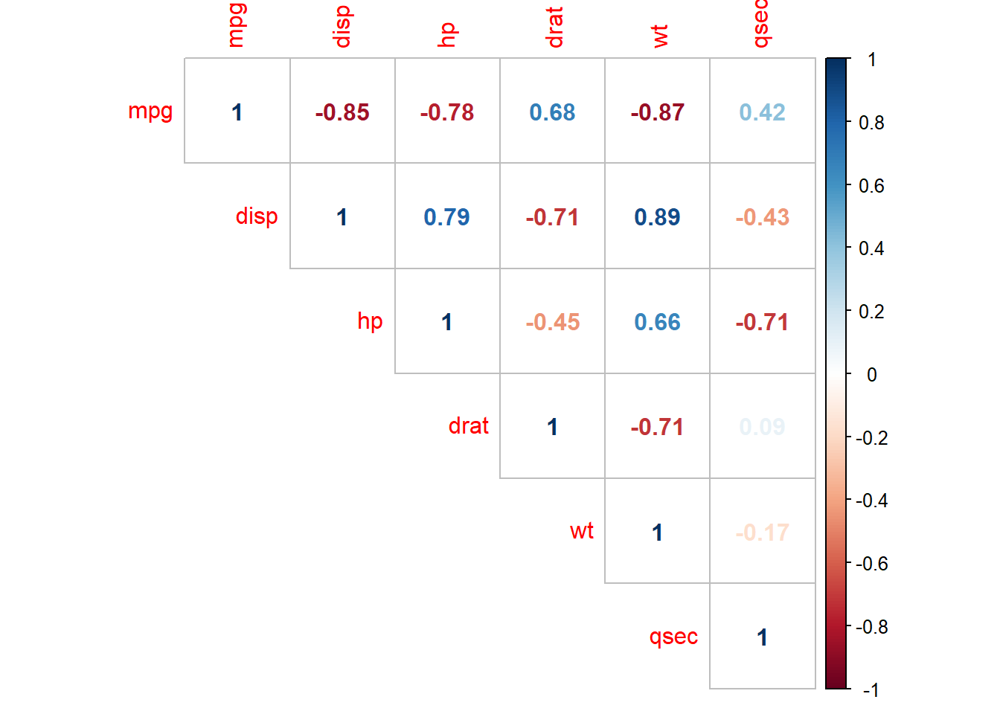
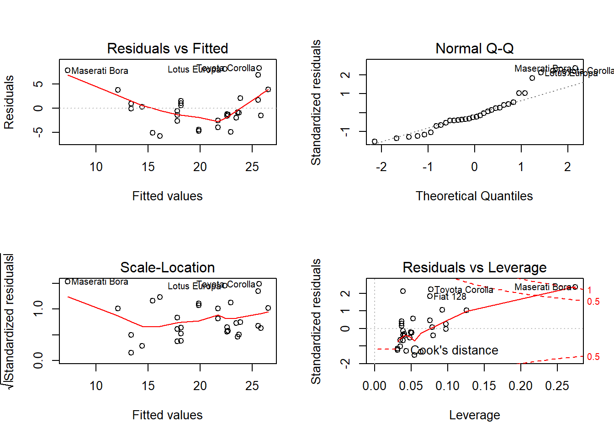
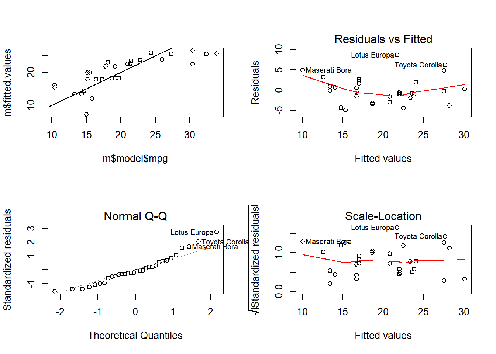
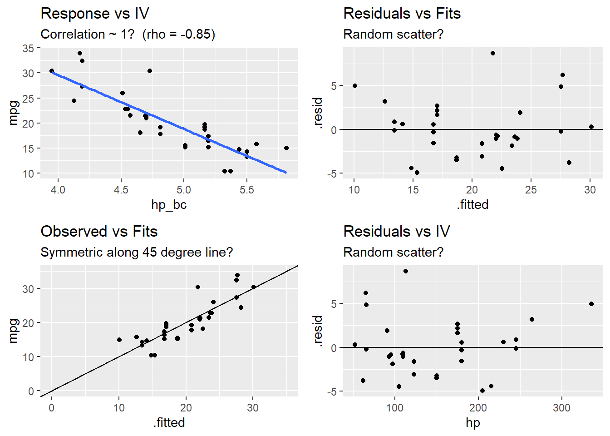
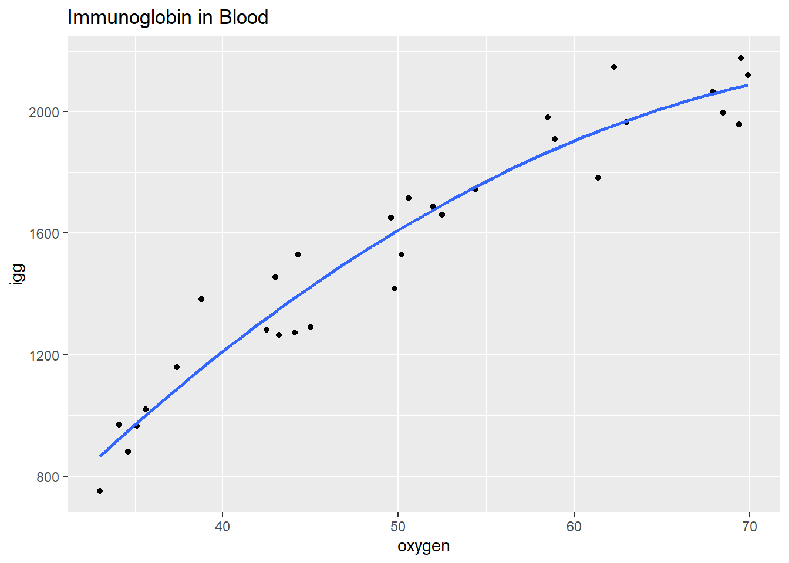

6.3 Model Assumptions
The linear regression model assumes the relationship between the predictors and the response is linear with the residuals that are independent random variables normally distributed with mean zero and constant variance.
Additionally, you will want to check for multicollinearity in the predictors because it can produce unreliable coefficient estimates and predicted values.
Use a residuals vs fits plot \(\left( e \sim \hat{Y} \right)\) to detect non-linearity and unequal error variances, including outliers. The polynomial trend line should show that the residuals vary around \(e = 0\) in a straight line (linearity). The variance should be of constant width (especially no fan shape at the low or high ends).
Use a residuals normal probability plot to compares the theoretical percentiles of the normal distribution versus the observed sample percentiles. It should be approximately linear.
A scale-location plot \(\sqrt{e / sd(e)} \sim \hat{y}\) checks the homogeneity of variance of the residuals (homoscedasticity). The square root of the absolute value of the residuals should be spread equally along a horizontal line.
A residuals vs leverage plot identifies influential observations. A plot of the standardized residuals vs the leverage should fall within the 95% probability band.

6.3.1 Linearity
The explanatory variables should each be linearly related to the response variable: \(E(\epsilon | X_j) = 0\). A good way to test this condition is with a residuals vs fitted values plot. A curved pattern in the residuals indicates a curvature in the relationship between the response and the predictor that is not explained by our model. A linear model does not adequately describe the relationship between the predictor and the response.
Test for linearity four ways:
- Residuals vs fits plot \((e \sim \hat{Y})\) should bounce randomly around 0.
- Observed vs fits plot \((Y \sim \hat{Y})\) should be symmetric along the 45-degree line.
- Each \((Y \sim X_j )\) plot should have correlation \(\rho \sim 1\).
- Each \((e \sim X_j)\) plot should exhibit no pattern.
If the linearity condition fails, change the functional form of the model with non-linear transformations of the explanatory variables. A common way to do this is with Box-Cox transformations.
\[w_t = \begin{cases} \begin{array}{l} log(y_t) \quad \quad \lambda = 0 \\ (y_t^\lambda - 1) / \lambda \quad \text{otherwise} \end{array} \end{cases}\]
\(\lambda\) can take any value, but values near the following yield familiar transformations.
- \(\lambda = 1\) yields no substantive transformation.
- \(\lambda = 0.5\) is a square root plus linear transformation.
- \(\lambda = 0.333\) is a cube root plus linear transformation.
- \(\lambda = 0\) is a natural log transformation.
- \(\lambda = -1\) is an inverse transformation.
A common source of non-linearity in a model is skewed response or independent variables (see discussion here). mtcars has some skewed variables.
tmp <- map(mtcars, skewness) %>%
unlist() %>%
as.data.frame() %>%
rownames_to_column()
colnames(tmp) <- c("IV", "skew")
ggplot(tmp, aes(x = order(IV, skew), y = skew)) +
geom_col()

## [1] -0.78## RMSE Rsquared MAE
## 3.7 0.6 2.9bc <- BoxCoxTrans(mtcars$hp)
df$hp_bc <- predict(bc, mtcars$hp)
m_bc <- lm(mpg ~ hp_bc, data = df)
plot(m_bc)
## [1] -0.85## RMSE Rsquared MAE
## 3.14 0.72 2.41## $mpg
## [1] 0.61
##
## $cyl
## [1] -0.17
##
## $disp
## [1] 0.38
##
## $hp
## [1] 0.73
##
## $drat
## [1] 0.27
##
## $wt
## [1] 0.42
##
## $qsec
## [1] 0.37
##
## $vs
## [1] 0.24
##
## $am
## [1] 0.36
##
## $gear
## [1] 0.53
##
## $carb
## [1] 1.1# Benchmark model: mpg ~ hp
d0 <- mtcars
m0 <- lm(mpg ~ hp, data = d0)
d0 <- augment(m0, d0)
d0.cor <- round(cor(d0$mpg, d0$hp), 2)
# Benchmark diagnostics
p0a <- ggplot(d0, aes(x = hp, y = mpg)) + geom_point() + geom_smooth(method = "lm", se = FALSE) +
labs(title = "Response vs IV",
subtitle = paste0("Correlation ~ 1? (rho = ", d0.cor, ")"))
p0b <- ggplot(d0, aes(x = .fitted, y = .resid)) + geom_point() + geom_abline(intercept = 0, slope = 0) +
labs(title = "Residuals vs Fits",
subtitle = "Random scatter?")
p0c <- ggplot(d0, aes(x = .fitted, y = mpg)) + geom_point() + geom_abline(intercept = 0, slope = 1) +
expand_limits(x = c(0, 35), y = c(0, 35)) +
labs(title = "Observed vs Fits",
subtitle = "Symmetric along 45 degree line?")
p0d <- ggplot(d0, aes(x = hp, y = .resid)) + geom_point() + geom_abline(intercept = 0, slope = 0) +
labs(title = "Residuals vs IV",
subtitle = "Random scatter?")
grid.arrange(p0a, p0b, p0c, p0d, nrow = 2)## `geom_smooth()` using formula 'y ~ x'## RMSE Rsquared MAE
## 3.7 0.6 2.9# Box-Cox transform hp
d1 <- mtcars
bc <- BoxCoxTrans(d1$hp)
d1$hp_bc <- predict(bc, d1$hp)
m1 <- lm(mpg ~ hp_bc, data = d1)
d1 <- augment(m1, d1)
d1.cor <- round(cor(d1$mpg, d1$hp_bc), 2)
p1a <- ggplot(d1, aes(x = hp_bc, y = mpg)) + geom_point() + geom_smooth(method = "lm", se = FALSE) +
labs(title = "Response vs IV",
subtitle = paste0("Correlation ~ 1? (rho = ", d1.cor, ")"))
p1b <- ggplot(d1, aes(x = .fitted, y = .resid)) + geom_point() + geom_abline(intercept = 0, slope = 0) +
labs(title = "Residuals vs Fits",
subtitle = "Random scatter?")
p1c <- ggplot(d1, aes(x = .fitted, y = mpg)) + geom_point() + geom_abline(intercept = 0, slope = 1) +
expand_limits(x = c(0, 35), y = c(0, 35)) +
labs(title = "Observed vs Fits",
subtitle = "Symmetric along 45 degree line?")
p1d <- ggplot(d1, aes(x = hp, y = .resid)) + geom_point() + geom_abline(intercept = 0, slope = 0) +
labs(title = "Residuals vs IV",
subtitle = "Random scatter?")
grid.arrange(p1a, p1b, p1c, p1d, nrow = 2)## `geom_smooth()` using formula 'y ~ x'## RMSE Rsquared MAE
## 3.14 0.72 2.41
6.3.2 Multicollinearity
The multicollinearity condition is violated when two or more of the predictors in a regression model are correlated. Muticollinearity can occur for structural reasons, as when one variable is a transformation of another variable, or for data reasons, as occurs in observational studies. Multicollinearity is a problem because it inflates the variances of the estimated coefficients, resulting in larger confidence intervals.
When predictor variables are correlated, the precision of the estimated regression coefficients decreases with each added correlated predictor variable. The usual interpretation of a slope coefficient as the change in the mean response for each additional unit increase in the predictor when all the other predictors are held constant breaks down because changing one predictor necessarily changes the others.
A residuals vs fits plot \((\epsilon \sim \hat{Y})\) should have correlation \(\rho \sim 0\). A correlation matrix is helpful for picking out the correlation strengths. A good rule of thumb is correlation coefficients should be less than 0.80. However, this test may not work when a variable is correlated with a function of other variables. A model with multicollinearity may have a significant F-test with insignificant individual slope estimator t-tests. Another way to detect multicollinearity is by calculating variance inflation factors. The predictor variance \(Var(\hat{\beta_k})\) increases by a factor
\[VIF_k = \frac{1}{1 - R_k^2}\]
where \(R_k^2\) is the \(R^2\) of a regression of the \(k^{th}\) predictor on the remaining predictors. A \(VIF_k\) of \(1\) indicates no inflation (no corellation). A \(VIF_k >= 4\) warrants investigation. A \(VIF_k >= 10\) requires correction.
6.3.2.1 Example
Does the model mpg ~ . exhibit multicollinearity?
The correlation matrix above (and presented again below) has several correlated covariates. disp is strongly correlated with wt (r = 0.89) and hp (r = 0.79).
m <- lm(mpg ~ ., data = mtcars)
corrplot(cor(subset(d, select = c(mpg, disp, hp, drat, wt, qsec))), type = "upper", method = "number")
Calculate the VIFs.
## cyl disp hp drat wt qsec vs am gear carb
## 15.4 21.6 9.8 3.4 15.2 7.5 5.0 4.6 5.4 7.9There are two predictors with VIFs greater than 10, cyl (GVIF = 21.36) and disp (GVIF = 13.76). One way to address multicollinearity is removing one or more of the violating predictors from the regression model. Try removing cyl.
## disp hp drat wt qsec vs am
## 9.9 5.4 2.8 7.6 6.0 4.2 3.5##
## Call:
## lm(formula = mpg ~ . - cyl, data = d[, 1:9])
##
## Residuals:
## Min 1Q Median 3Q Max
## -3.407 -1.469 -0.282 1.142 4.537
##
## Coefficients:
## Estimate Std. Error t value Pr(>|t|)
## (Intercept) 12.4980 12.4804 1.00 0.3266
## disp 0.0137 0.0114 1.21 0.2382
## hp -0.0228 0.0153 -1.50 0.1478
## drat 0.9553 1.4074 0.68 0.5038
## wt -3.9497 1.2626 -3.13 0.0046 **
## qsec 0.8715 0.6133 1.42 0.1682
## vsS 0.5902 1.8330 0.32 0.7503
## ammanual 3.0240 1.6684 1.81 0.0824 .
## ---
## Signif. codes: 0 '***' 0.001 '**' 0.01 '*' 0.05 '.' 0.1 ' ' 1
##
## Residual standard error: 2.5 on 24 degrees of freedom
## Multiple R-squared: 0.867, Adjusted R-squared: 0.829
## F-statistic: 22.4 on 7 and 24 DF, p-value: 0.00000000453Removing cyl reduced the VIFs of the other variables below 10. disp is still right up there (VIF = 9.87), so it may be worth dropping it from the model too. The model summary still shows that there is only one significant (at .05 level a significance) variable (wt, p = .00457). What if I drop disp too?
## hp drat wt qsec vs am
## 5.1 2.7 5.1 5.8 4.1 3.3##
## Call:
## lm(formula = mpg ~ . - cyl - disp, data = d[, 1:9])
##
## Residuals:
## Min 1Q Median 3Q Max
## -3.369 -1.721 -0.253 1.099 4.603
##
## Coefficients:
## Estimate Std. Error t value Pr(>|t|)
## (Intercept) 16.1410 12.2232 1.32 0.1986
## hp -0.0180 0.0149 -1.21 0.2380
## drat 0.6205 1.3926 0.45 0.6597
## wt -3.0751 1.0446 -2.94 0.0069 **
## qsec 0.7347 0.6084 1.21 0.2385
## vsS 0.2045 1.8217 0.11 0.9115
## ammanual 2.5653 1.6397 1.56 0.1303
## ---
## Signif. codes: 0 '***' 0.001 '**' 0.01 '*' 0.05 '.' 0.1 ' ' 1
##
## Residual standard error: 2.5 on 25 degrees of freedom
## Multiple R-squared: 0.859, Adjusted R-squared: 0.825
## F-statistic: 25.4 on 6 and 25 DF, p-value: 0.00000000169The model is not improved, so keep disp.
If the multicollinearity occurs because you are using a polynomial regression model, center the predictor variables (subtract their means).
6.3.2.2 Example
Data set exerimmun (exerimun.txt) contains observations of immunoglobin in blood (a measure of immunity) and maximal oxygen uptake (a measure of exercise level) for \(n = 30\) individuals.
igg= amount of immunoglobin in blood (mg)oxygent= maximal oxygen uptake (ml/kg)
How does exercise affect the immune system?
#exerimmun <- read_tsv(file = "./Data/exerimmun.txt")
exerimmun <- tribble(
~igg, ~oxygen,
881, 34.6,
1290, 45,
2147, 62.3,
1909, 58.9,
1282, 42.5,
1530, 44.3,
2067, 67.9,
1982, 58.5,
1019, 35.6,
1651, 49.6,
752, 33,
1687, 52,
1782, 61.4,
1529, 50.2,
969, 34.1,
1660, 52.5,
2121, 69.9,
1382, 38.8,
1714, 50.6,
1959, 69.4,
1158, 37.4,
965, 35.1,
1456, 43,
1273, 44.1,
1418, 49.8,
1743, 54.4,
1997, 68.5,
2177, 69.5,
1965, 63,
1264, 43.2
)
head(exerimmun)## # A tibble: 6 x 2
## igg oxygen
## <dbl> <dbl>
## 1 881 34.6
## 2 1290 45
## 3 2147 62.3
## 4 1909 58.9
## 5 1282 42.5
## 6 1530 44.3The scatterplot oxygen ~ igg shows some curvature. Formulate a quadratic polynomial regression function, \(igg_i = \beta_0 + \beta_1 oxygen_i + \beta_2 oxygen_i^2 + \epsilon_i\) where the error terms are assumed to be independent, and normally distributed with equal variance.
ggplot(exerimmun, aes(y = igg, x = oxygen)) +
geom_point() +
geom_smooth(method = lm, formula = y ~ poly(x, 2), se = FALSE) +
labs(title = "Immunoglobin in Blood")
The formulated regression fits the data well (\(adj R^2 = .933\)), but the terms oxygen and oxygen^2 are strongly correlated.
##
## Call:
## lm(formula = igg ~ poly(oxygen, 2), data = exerimmun)
##
## Residuals:
## Min 1Q Median 3Q Max
## -185.37 -82.13 1.05 66.01 227.38
##
## Coefficients:
## Estimate Std. Error t value Pr(>|t|)
## (Intercept) 1557.6 19.4 80.16 <0.0000000000000002 ***
## poly(oxygen, 2)1 2114.7 106.4 19.87 <0.0000000000000002 ***
## poly(oxygen, 2)2 -360.8 106.4 -3.39 0.0022 **
## ---
## Signif. codes: 0 '***' 0.001 '**' 0.01 '*' 0.05 '.' 0.1 ' ' 1
##
## Residual standard error: 106 on 27 degrees of freedom
## Multiple R-squared: 0.938, Adjusted R-squared: 0.933
## F-statistic: 203 on 2 and 27 DF, p-value: <0.0000000000000002## [1] 0.99Remove the structural multicollinearity by centering the predictors. You can scale the predictors with scale(), but be careful to scale new data when predicting new observations with predict(newdata=)! Whenever possible, perform the transformation right in the model.
m_blood <- lm(igg ~ I(oxygen - mean(exerimmun$oxygen)) +
I((oxygen - mean(exerimmun$oxygen))^2),
data = exerimmun)
summary(m_blood)##
## Call:
## lm(formula = igg ~ I(oxygen - mean(exerimmun$oxygen)) + I((oxygen -
## mean(exerimmun$oxygen))^2), data = exerimmun)
##
## Residuals:
## Min 1Q Median 3Q Max
## -185.37 -82.13 1.05 66.01 227.38
##
## Coefficients:
## Estimate Std. Error t value
## (Intercept) 1632.196 29.349 55.61
## I(oxygen - mean(exerimmun$oxygen)) 34.000 1.689 20.13
## I((oxygen - mean(exerimmun$oxygen))^2) -0.536 0.158 -3.39
## Pr(>|t|)
## (Intercept) <0.0000000000000002 ***
## I(oxygen - mean(exerimmun$oxygen)) <0.0000000000000002 ***
## I((oxygen - mean(exerimmun$oxygen))^2) 0.0022 **
## ---
## Signif. codes: 0 '***' 0.001 '**' 0.01 '*' 0.05 '.' 0.1 ' ' 1
##
## Residual standard error: 106 on 27 degrees of freedom
## Multiple R-squared: 0.938, Adjusted R-squared: 0.933
## F-statistic: 203 on 2 and 27 DF, p-value: <0.0000000000000002The estimated intercept coefficient \(\hat{\beta}_0 = 1632\) means a person whose maximal oxygen uptake is \(50.64\) ml/kg (the mean value) is predicted to have \(1632\) mg of immunoglobin in his blood. The estimated coefficient \(\hat{\beta}_1 = 34.0\) means a person whose maximal oxygen uptake is near \(50.64\) ml/kg is predicted to increase by 34.0 mg for every 1 ml/kg increase in maximal oxygen uptake.
By performing all transformations in the model, it is straightforward to perform predictions. Here is the predicted value of immunoglobin when maximal oxygen uptake = 90.00 ml/kg.
## fit lwr upr
## 1 2140 1640 26406.3.3 Normality
A normal probability plot or a normal quantile plot should have values near the line with no bow-shaped deviations. A histogram should be normally distributed. A residuals vs fits plot \((\epsilon \sim \hat{Y})\) should be randomly scattered around 0. Sometimes the normality check fails when linearity assumption does not hold, so check for linearity first. Parameter estimation is not sensitive to this condition, but prediction intervals are.
6.3.4 Equal Variances
The residuals should be the same size at both low and high values of the response variable. A residuals vs fits plot \((\epsilon \sim \hat{Y})\) should have random scatter in a band of constant width around 0, and no fan shape at the low and high ends. All tests and intervals are sensitive to this condition.